Two kilometres of meadow, forest, coast, ash and mountain, shaped by an old catastrophe and the people who rebuilt after it.
The Unweaving
Before anyone now living, the Weavers held Aldervast together with the Lattice, a web of light woven through the land. Then the web came apart. The Unweaving broke the old order; the Cinder Fall struck the west and turned it to glass; the Durrak sealed their mountain holds, and many never opened again.
The Hearthborn settled the Vale after the Unweaving and founded the Lantern Compact, an alliance of free towns whose lanterns burn with salvaged Lattice-light. The Vaelin of the Thornwood remember the Weavers and do not forgive them. The Ashkin, ember-marked descendants of those caught in the Fall, are feared in the Vale and honoured in the Wastes.
Now the dead are walking again as the Hollow, the Ashen Choir preaches that the world must be fully unwoven to be reborn, and at the top of the Spire the Sundered King waits with the Choir at his feet. Heroes touched by the Lattice can feel it all stirring. You are one of them.
The map
Where everything is
The game's own world map, with towns, dungeons, landmarks and hidden places marked. Tap or hover a marker for a name; tap again to open it in the wiki.
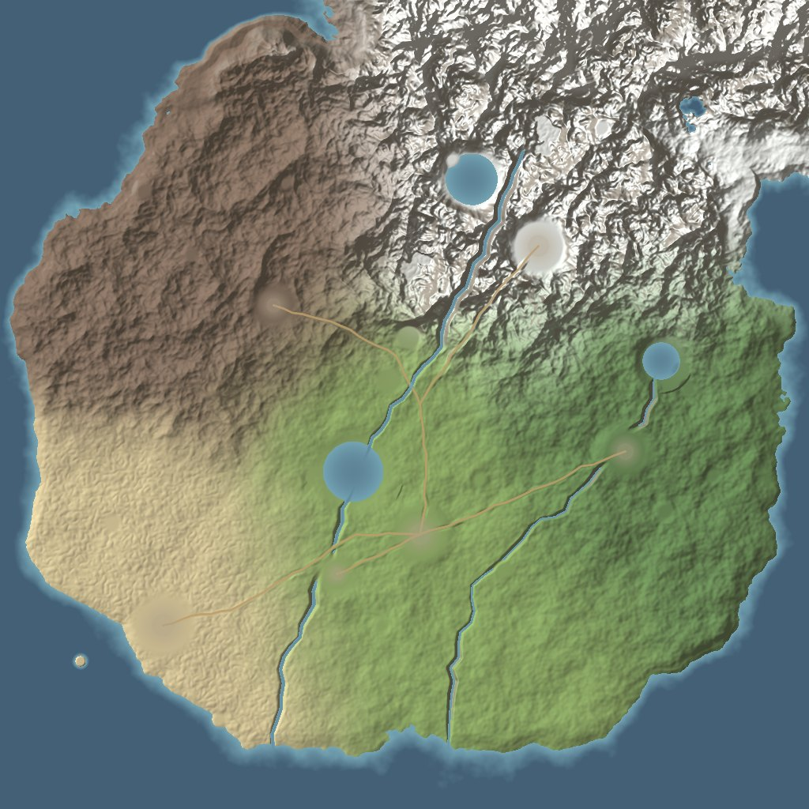
TownsDungeonsRaid and the Lattice GateLandmarksHidden placesWorld eventWorld boss lairs
Regions
Five lands
Monsters take their level from the region they live in, so the island opens up as you grow stronger.
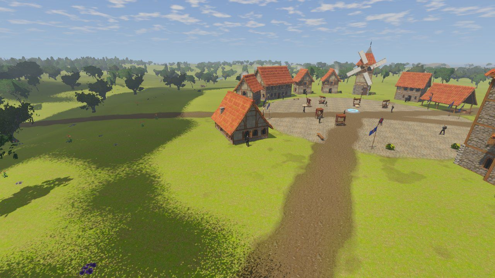
Cloud shadows drift over Harrowford and the Vale road on a bright afternoon.
Levels 1 to 9 · The Lantern Compact
Brightmeadow Vale
Rolling green hills, windmills and orchards. The heart of the Lantern Compact and the safest land left in Aldervast.
Brightmeadow is where every hero begins: rolling meadow, its grass dried toward straw on the ridges and deep and green in the hollows and by the water. Wildflowers grow through it in drifts, and reeds and cattails stand along the lake shores. Harrowford's elder, Maren Tolliver, takes in newcomers, and the Great Hourglass on its square sends seasoned heroes on timed runs; Captain Hale's watch holds the crypt road; Millbrook's wheat fields lie to the west. The Hollow Crypt waits east of town, the Nine Sisters hum when the Lattice stirs, and in the north the Shattered Ring is where Calathrax, the Elder Wyrm, comes down.
Scanned trees, ferns and fallen branches line the forest paths.
Levels 8 to 16 · The Thorn Covenant
Thornwood
An ancient forest of giant trees, where the Vaelin keep their hollow courts and something old stirs in the roots.
East of the Vale the trees grow huge, over a floor of moss, leaf litter and ferns. The Vaelin of Lisswen Hollow keep their courts here under the Thorn Covenant, and they do not forget old wrongs. Something beneath the Heartroot has unsealed the Rootdeep Warrens and is feeding the Choir. Thornback Stalkers hunt in packs; ogres hold the deep woods. Once an hour, in the Antlered Glade, Elderhorn, the Moss Stag, walks in from the trees.
Dunes, sea cliffs and the open western sea along the Saltreach Coast.
Levels 12 to 20 · The Tidewardens
Saltreach Coast
Windswept dunes, sea cliffs and drowned ruins. Gullhaven's harbor is the last free port on the western sea.
Surf rolls in over the shallows, and marram grass holds the dunes along the coast. Gullhaven is the last free port on the western sea, home of the Tidewardens: sailors, smugglers and lighthouse keepers. Ships have been vanishing, sailors speak of a bell ringing under the waves, and the Greywatch light went dark the night it began. Gullhaven also has the island's auction house, its strongroom and the guild registrar. Beside the Drowned Grotto a sea gate leads down into the Drowned Basilica, a raid for up to ten. Now the Light burns blue-white under its keeper, Orla Penwarden, and medusae drift in to it out of the bay; beneath the headland lies the Undertow, a sea cave where the tide pools glow. On the Broken Shoals, Old Carapace sleeps under the sand with the stern of the Merrow's Due on its back, and wakes once an hour.
The Emberwatch's palisade and pavilions in the ash of the Cinderreach.
Levels 18 to 26 · The Ashen Choir
Cinderreach Wastes
Where the Cinder Fall struck. Black glass plains, smouldering fissures and the bones of Old Kaldris.
The ground here is black glass and dark ash, the cooled lava broken into plates with the old heat glowing in the cracks between them, and vents smoke across the fields. The Emberwatch keeps a lonely vigil from its palisade camp, watching the Ashen Choir gather in the ruins of Old Kaldris. The Glass Scar still holds echoes of the Fall, and the Lattice Gate stands at the camp's edge. In the Cinder Crater a cold heap of stone stands up once an hour as Vorgrath, the Cinder Colossus.
The keep's towers and pennants under the Frostspire peaks.
Levels 24 to 34 · The Lantern Compact
Frostspire Peaks
Knife-edged mountains crowned by Highwatch Keep. Above it, the Spire where the Sundered Crown fell.
Knife-edged granite mountains crowned by Highwatch Keep, which has stood for eight hundred years under the Stonemere lords. Snow lies deep over the scree and weighs on the firs' dark boughs. Trolls hold the high passes, harriers dive from the cliffs, and Frostmere lies frozen in the valley. Above the keep rises the Spire where the Sundered Crown fell, and where the Sundered King waits. Past Highwatch, in the snowfield, Tavish Rime keeps the Warp Pillars, where the Lattice's first knots were tied; beneath them lies the Hall of the Warp.
Millbrook Farms among its fields of ripe wheat, young shoots and ploughed earth, with trees gathered in copses across the meadow between them.
The countryside
Fields, roads and worn ground
The towns are worn by the people who live in them. The grass gives way to bare earth along every wall, each door has a trodden patch in front of it, and a footpath runs from each house out to the square; the war camp and the keep are trodden bare across their yards.
Millbrook Farms has seven fields and Harrowford four: ripe wheat standing waist high with nodding ears, which ripples gold under the gusts when seen from afar, rows of young green shoots, and fresh-ploughed furrows, with the stalks planted along the furrows' lines. Meadow trees gather in copses with open grass between them, and the forests open into grassy glades with ferns and brambles thickest at their edges.
The roads have milestones, signposts where they leave a town and where two meet, wooden fences along the verges into the villages, a wagon pulled off each road and stacks of cut logs by the forest; they are solid, so you walk round them. In the mountains the snow lies in long wind drifts with ripples carved in its crust and greyer patches where the wind has scoured it, and roads and yards in the snow turn to grey slush.
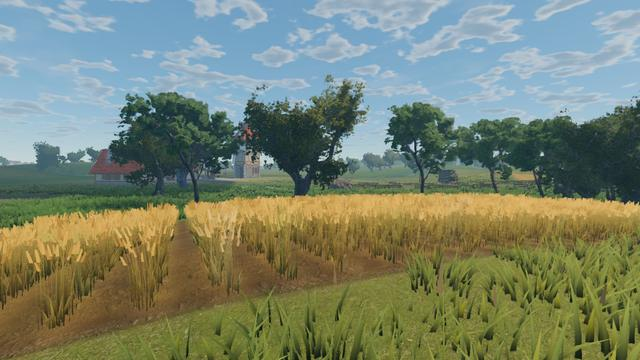
Ripe wheat
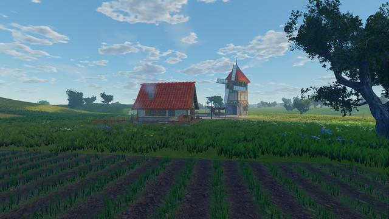
Young shoots
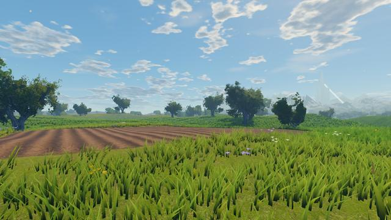
A ploughed field
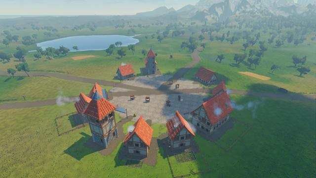
Harrowford's worn ground
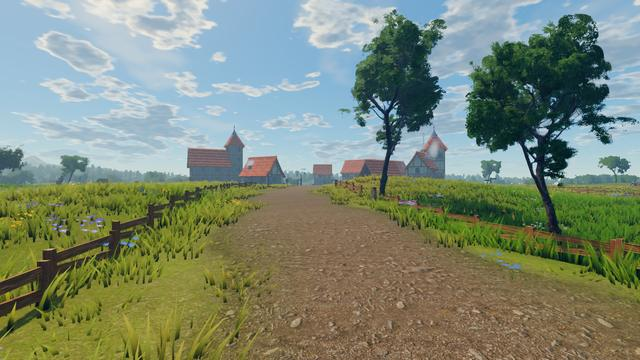
The road into the village
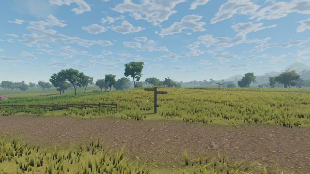
A signpost
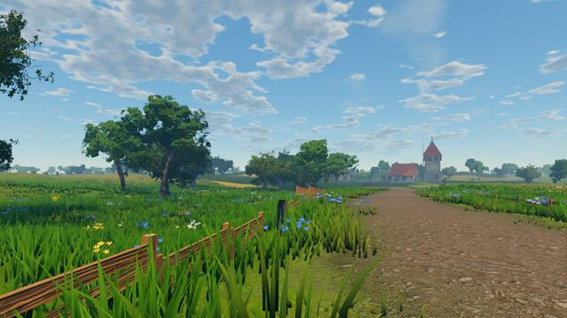
A milestone
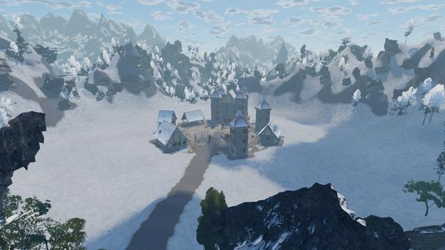
Highwatch in the snow
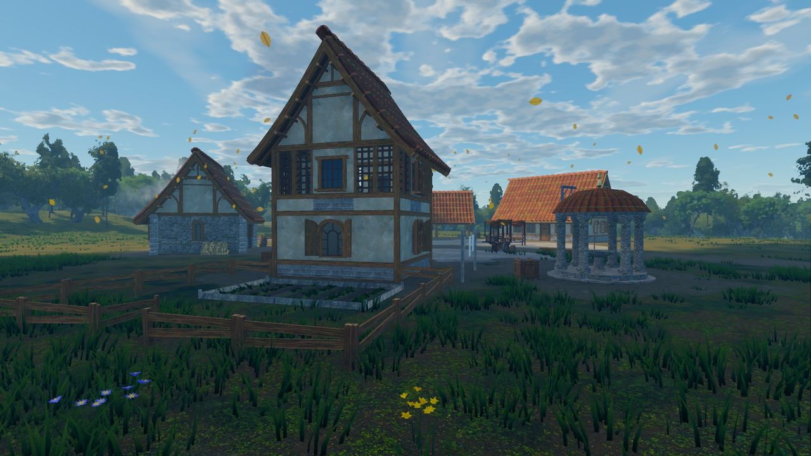
A house in Lisswen Hollow standing in its yard: a woodpile of split logs against the wall, a barrel, the wash pegged out on a line and a kitchen garden beside it, with leaves drifting down from the Thornwood.
The towns
Yards, fenced plots and hens
Every house stands in a yard of its own. Against a side or back wall, where there is no door or window on the ground floor, a woodpile of split logs is stacked end-out under the eaves, its rows a little uneven and its top row short; most have a chopping block beside them, often with the axe left in it. A bench stands against the front wall by the door, and barrels, barrels of apples, buckets, crates and stools gather at a corner or two.
Behind or beside many houses the wash is pegged out on a line between two posts, bellying and fluttering in the wind with the sun showing through it. Houses, farmhouses and lodges keep kitchen gardens behind them: beds of dug earth edged with planks and corner stakes, planted in rows of young greens or freshly dug over.
Behind most houses and farms a plot is fenced off with post-and-rail fencing, as big as the ground allows, its gate standing open. Behind the farmhouses, barns and stables the ground is scratched and trodden bare, farm carts stand in the farms' plots, and hens peck about in many of them, white, red-brown, buff, black, speckled grey and dark brown, each walking her own little round in fits and starts, pecking when she stops and lifting her head to look about.
All of it keeps clear of the paths and doorways, the square, the fields and the places where the townsfolk stand. It is there for the look of the place only, so you pass straight through it, fences included. Chimney smoke is fainter at the mouth of the chimney, so close by it no longer reads as a white ball.
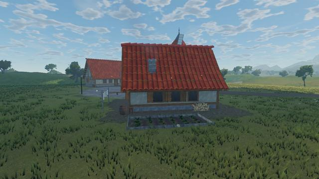
A Millbrook farmhouse
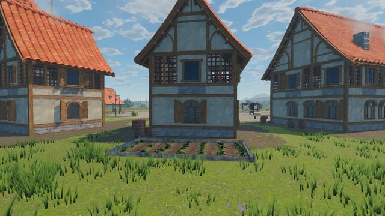
A kitchen garden
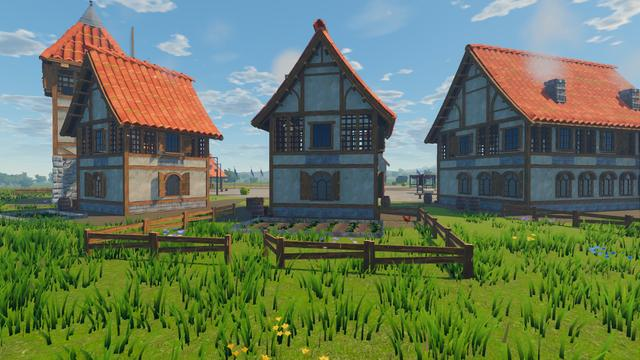
Yards in Harrowford
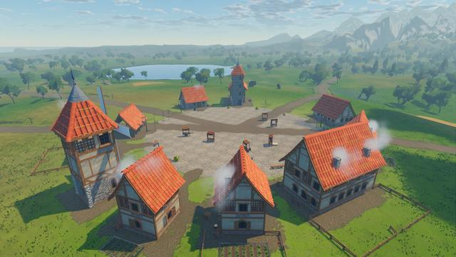
Harrowford's yards from above
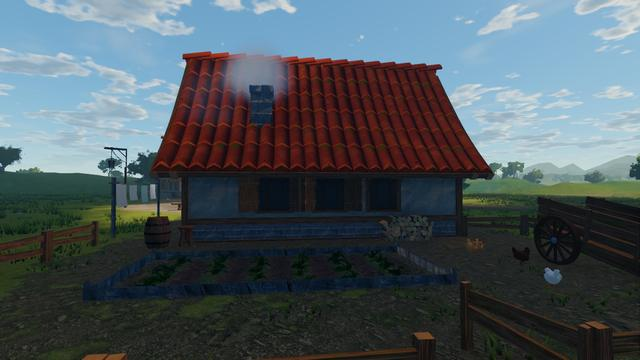
A farmyard
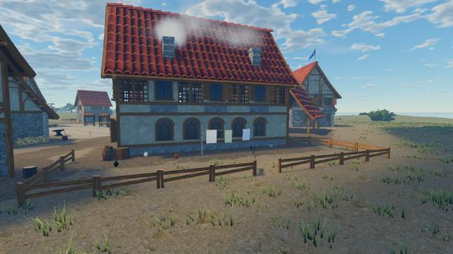
A plot at Gullhaven
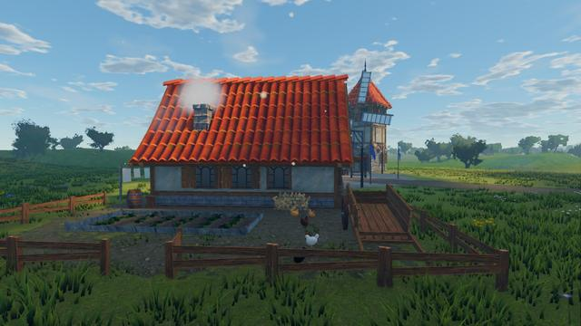
A plot at Millbrook
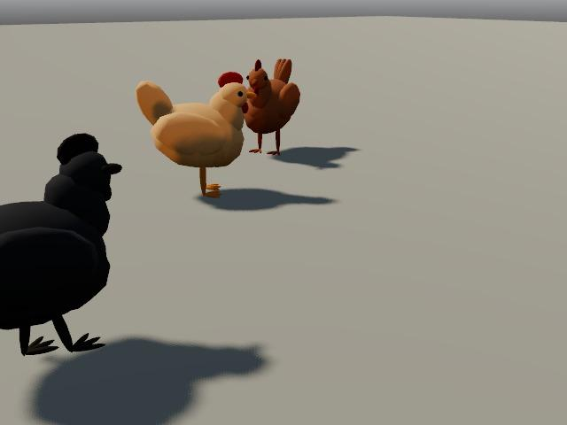
Hens
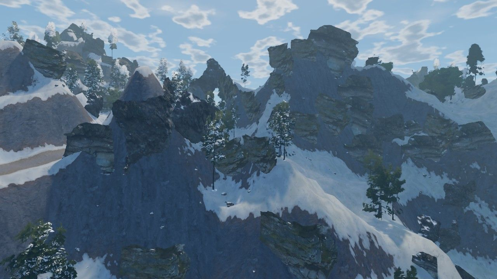
A Frostspire mountainside: grey granite banded across its steep faces and streaked down them by the weather, scanned crags standing out of it, and snow and firs on the gentler slopes.
The land
Rock, snow, forest light and smoke
The mountains read as rock from afar as well as close by. Past about twenty metres the cliff faces take their stone again at a larger scale, so a mountainside a few hundred metres off shows its grain instead of a flat grey; broad bands of harder and softer rock run across the steep faces, the weather has streaked them downward, and the rock breaks raggedly into the turf and snow around it. The peaks' granite is a true grey.
Each snowy fir wears as much snow as the ground it stands on, and seen from far off the snow lies only on the tops of its boughs, so a slope of firs reads dark green under white. The firs on the snowfields' edges, where the ground is still mostly turf, no longer stand out as white puffs on the green.
Under the forest canopy the grass grows in patches a few metres across where the light comes down, with bare leaf litter between, the ferns grow in bigger, looser clumps, and more litter lies about. In the towns, chimney smoke rises in soft, pale columns lit through from behind by the sun.
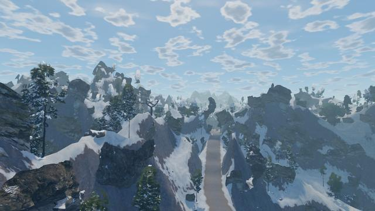
Up into the peaks
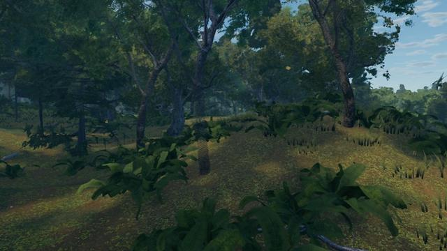
Light on the forest floor
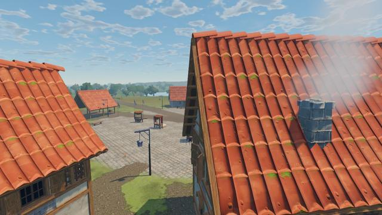
Over the rooftops
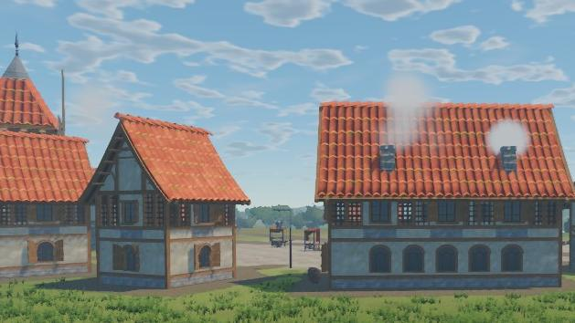
Chimney smoke
Snowy firs from afarThe same firs before 1.3.0
Brightmeadow under big heaps of cumulus, a field of ripe wheat and violet asters in the grass, with the ice spires of the Sundered Crown rising pale through the haze above the Frostspire Peaks, more than a kilometre off.
The land
Big skies and the Spire on the skyline
The clouds gather into big heaps of cumulus, their sunlit faces billowing and their bellies shaded, drifting over the island with their shadows. By day the colour is fuller, with deeper shade under the sunlit tips of the grass, cool shadows and warm highlights.
Violet asters with gold eyes and buttercups grow through the meadows in little groups of two or three among the ox-eye daisies, and the far meadows turn violet with them. Looking toward a low sun, the grass is lit through, its blades glowing gold-green at the tips.
Behind the raid's gate in the Frostspire stands the Spire of the Sundered Crown: nine six-sided spires of ice, the tallest 236 metres high and three of them broken off at a slant, with a crown of shards round the tallest two thirds of the way up. Their cut faces glow from within, the light rising to their tips, so they show through the haze from the meadows more than a kilometre away and shine brighter at night. You can see them from Harrowford.
A meadow against the sunMorning in the meadowsThe Spire of the Sundered CrownThe Spire from Harrowford
A vent smoking in Cinderreach's lava fields, a ring of black basalt round its glowing throat, among cracks in the crust that run at their own heat, from cold black to orange.
The land
The ash lands
Cinderreach's cooled lava lies as a crust broken into plates, their edges darker and falling away into the cracks between them. Each crack runs at its own heat: some have gone cold and black, others glow deep red or orange, and the hottest cores burn white-gold and warm the crust beside them. Up close the cracks run jagged and the plates are crazed with hairline cracks; far off they hold still instead of shimmering.
Over a hundred vents smoke in the lava fields across the island, each a ring of black basalt heaped round a glowing throat. A thin, sulphur-pale smoke rises from the vents nearest you, lit warm from below and leaning with the wind, and farther off they show their glowing mouths. The ash lands' embers are small sparks that cool as they rise, and where turf meets the ash no glow shows through the grass.
The vents and cracks are scenery: you walk straight over them, and standing on one hurts no one.
A vent at nightThe crater's lava fieldsThe Lattice Gate at nightCracks before the Gate
A hero on Highwatch's snowy square, breath steaming in the cold air against the stone of the keep.
The land
Deep winter
In the Frostspire the open snow lies in long drifts shaped by the wind, all along one axis: a gentle slope on the windward side and a short, steep lee every eleven metres or so, bent by the lie of the land. Close by, fine ripples run across them, and within a few metres crystals in the snow glint in the sun as you move.
Breath steams in the cold. Where it snows, and in the ice dungeons, everything living near you breathes out a small cloud that swells, rises, leans downwind and thins, quicker when running: heroes, townsfolk and monsters, and horses from their nostrils. The dead, the frost-woven and creatures of stone and snow do not. Against bright snow at midday it is hard to see, as it is in life; it shows against dark walls and clothes, and with the light behind it.
The Carded's fleece is a cooler blue-grey with lilac in its creases, so they stand out from the snow they crawl over, and the Spindle's Foot is wider and brighter. Struck, the Carded and the King's Spinster's frost-woven maids shed frost and a puff of powder snow.
A horse's breathWind drifts at the Spindle's FootSnow on the peaksFrost from a Crown Carder
The main story
The Unlit Road
Twelve quests lead from Harrowford to the top of the Spire and on through the Lattice Gate. The story goes on in a second chapter, the Last Lantern, a third, the Pale Moth, a fourth, the Loomwright, a fifth, the Tideloom, a sixth, the Selvage, a seventh, the Other Boat, an eighth, the Looking Side, a ninth, the Far Side, a tenth, the Crown Spindle, an eleventh, the Shears, and a twelfth, the Measure.
1A Light in Harrowford· Brightmeadow Vale You woke on the road with Lattice-light in your veins and no memory of the night before. Harrowford's elder wants to see you.
2The Restless Dead· Brightmeadow Vale The dead walk the crypt road at night. Thin their numbers before they reach the farms.
4The Hollow Crypt· Brightmeadow Vale Something old commands the dead from the crypt east of town. End it.
6Signals from the Watchtower· Brightmeadow Vale Lights were seen at the Old Watchtower. Cutthroats, maybe. Or worse.
9Into the Thornwood· Thornwood The sigil leads east to the Thornwood and the Vaelin of Lisswen Hollow.
12The Rootdeep Warrens· Thornwood The warrens beneath the Heartroot have been unsealed. Whatever nests there is feeding the Choir.
15The Bell Beneath the Waves· Saltreach Coast Ships vanish off the Saltreach coast. Sailors speak of a bell ringing under the waves.
19Ash and Glass· Cinderreach Wastes The map leads to the Cinderreach, where the Emberwatch keeps a lonely vigil.
22The Cinder Forge· Cinderreach Wastes The Choir is forging a key from the Cinder Fall's heart. Destroy the forge.
30Spire of the Sundered Crown· Frostspire Peaks The Sundered King waits at the top of the Spire, with the Choir at his feet. End this.
32Beyond the Lattice Gate· With the King fallen, the Lattice Gate shimmers with impossible places. Ysolde can open the way, and she keeps a waystone for anyone going through for the first time.
Chapter two
The Last Lantern
Seven quests from the Lattice Gate back to the stones where you woke, and down into a vault beneath the Glass Scar.
With the Sundered King fallen, the Lattice Gate begins to bleed threads of light, and something is reeling them in. Elder Maren admits she never found you on the road: she found you among the Nine Sisters, beside a lantern that burns without oil. Set it on the altar stone and keep the vigil through three waves of the Hollow, and its flame points you to the Shrine of the Quiet Frost above Highwatch, where Wenna Coldspindle, the last of the Weavers, gives a name to the man who lit you.
Ilgrim, the last Lamplighter of the Lantern Order, is gathering the loose threads into the Last Lantern, in a vault beneath the Glass Scar. Past Ser Caddoc, the Wick-Knight, he waits by the Lantern, and when he falls the choice of what becomes of it is yours: douse it and let the threads go free, or carry its flame yourself. Each choice gives its own unique, Lampblack or Ilgrim's Spark. Wenna and Scholar Dunmore have two side quests of their own along the way.
The vigil at the Nine SistersSer Caddoc, the Wick-KnightIlgrim, the Last Lamplighter
33Threads Unbound· Cinderreach Wastes Since the King fell, the Gate has been bleeding threads of Lattice-light, and they do not drift. Something is reeling them in, west over the mountains toward Brightmeadow, toward the road where you woke. I have seen a light like yours before, Ysolde says. On a man who came through here with a lantern, the year before you came.
33The Road You Woke On· Brightmeadow Vale I told everyone I found you on the road. I didn't. I found you lying among the Nine Sisters, and there was a lantern burning beside you with no oil in it, and a man in a lamplighter's long coat walking away north with his pole on his shoulder. I hid that lantern under the altar stone the same night. I was afraid of it. I still am.
34Vigil at the Nine Sisters· Brightmeadow Vale The old songs say a lantern wants to burn where it was first lit. Set it on the altar stone among the Sisters and keep watch. It will show you where its flame came from, if it shows anything. But the Hollow can smell that light three valleys off, and they will come for it. Don't go alone if you can help it.
34The Voice in the Frost· Frostspire Peaks Follow the flame north, to the Shrine of the Quiet Frost above Highwatch Keep. If anyone still knows who lit you, it is whoever keeps the threads up there.
35Threads Through the Glass· Cinderreach Wastes A Crown sunders and the threads it held go free. A Lamplighter who gathers them can make the Last Lantern burn as it was always meant to: a dawn that never sets, that burns the Hollowing out of the world. And everything else the Lattice has touched. The Vaelin's Heartroot. The Gate. You. His Wickbound are spinning the threads down into the Glass Scar. Take them back.
36The Vault of the Last Lantern· Cinderreach Wastes Ilgrim waits beneath the Glass Scar with the Last Lantern and every thread he has gathered. End it, before he lights it.
36Lamplight· Brightmeadow Vale Go home to Harrowford, Vey says. Whatever you did down there, the woman who found you among the stones has waited twenty years to hear the end of it.
Chapter three
The Pale Moth
Six quests, from Harrowford to the Heartroot and down into the hall where the Lattice was first spun.
Wenna writes from the frost that the Lattice's threads are falling round the Heartroot, fewer every night. A moth as pale as the moon, older than the Lattice, has woken beneath the great tree: its brood flutter round the Heartroot eating the threads, and the Silkbound, Vaelin who breathed its dust, spin cocoons tied down about the roots. Cut the cocoons open and Wenna comes down out of the mountains to mend the Heartroot at her frame. Hold the moths and the Silkbound off her through three waves while she works, and the eaten Lattice on her frame burns bright again.
Beneath the Heartroot lies the Moth-Eaten Loom, where Wenna's elder sister, Aldreth Silkhand, the Unspinner, has fed the Moth for fifty years. When the Pale Moth falls you choose: weave its silk into the Heartroot's wound, or burn the Loom and every thread it spun. Each choice gives its own unique, Heartsilk or Loomfire. Two side quests come with it: hunters wrapped in silk by the Forgotten Hunter's Cache, and the moths' wing-dust. People in the world now move with your story: once the cocoons are cut, you find Wenna at the Heartroot rather than at her shrine.
The Pale Moth's broodAldreth Silkhand, the UnspinnerThe Weavers' Great Loom
37Fewer Every Night· Brightmeadow Vale A letter came up the road for you while you slept, friend, sealed with frost that didn't melt by the fire. It's from the Weaver in the mountains. She writes that she counts the threads every night, as she always has, and that every night now there are fewer. She doesn't write what she thinks is taking them. I think she's afraid to.
37Moth-Light· Thornwood Moths. I knew it the moment I said it aloud. My grandmother's grandmother told of one: a moth as pale as the moon that ate the cloth of the world, until the Weavers wove it into the dark beneath the Heartroot, where the Lattice was first spun. If the threads are falling there, it has woken, and it is hungry. Go and see. The Vaelin will not thank you for coming, but go.
38Silk on the Heartroot· Thornwood Some of my people breathed the dust off the moths' wings and went quiet, and then they went down to the Heartroot and began to spin. We call them the Silkbound now. They wrap our own in silk and hang them in the Heartroot's roots for the moths. There are four cocoons there tonight. Cut them open before morning.
38The Mending· Thornwood Wenna Coldspindle has come down out of the mountains, the first Weaver to set foot in the Thornwood since my grandmother was a girl. She means to mend the Heartroot's threads where the moths have eaten them. The moths will come for her the moment the work begins to glow. Keep them off her until it is done.
39The Moth-Eaten Loom· Thornwood Fifty years ago my sister went down to the Weavers' Loom beneath the Heartroot to learn the oldest patterns, and she never came back up. Aldreth. I thought the dark had taken her. I think now she found the Moth asleep in the warp and woke it, and has fed it the Lattice thread by thread ever since. If she's down there, she's not my sister any more. Do what you must.
40Thread by Thread· Thornwood Go to Wenna, Ithrael says. She stayed by the Heartroot while you were below. Someone should tell her before the Silkbound do.
Chapter four
The Loomwright
Six quests for levels 40 to 42, from Wenna's shrine north to the Warp Pillars and down into the hall beneath them.
The threads the Moth ate are mended, but Wenna's count still comes up short: the oldest threads of the Lattice, the warp it all hangs from, are being pulled north, to the Warp Pillars in the snowfield past Highwatch, where the first knots were tied. Tavish Rime has kept the stones for thirty winters, and the threads never moved until now. Glass spiders the size of ponies have come out of the snow to climb the Pillars and spin Lattice thread to a pattern nobody has seen. Break them, cut their glass from the three anchor stones while the Warp-Weavers guard them, and keep the spiders off Wenna through three waves while she re-weaves the warp at its roots.
Beneath the Pillars lies the Hall of the Warp, where Vessrin, the Glass Brood-Queen, webs her hall from wall to wall, and the Loomwright, the glass giant who wove the Lattice before the Weavers learned the craft from it, has woken at its loom to weave it again to a pattern of its own. When it falls you choose: bind it back into the warp it wove, or cut the thread that holds it. Each choice gives its own unique, The Warpthread Crown or The Last Knot. Tavish has two side quests of his own: climbers webbed on the slopes, and spinnerets for Highwatch's glaziers. Once the anchors are tied, Wenna comes up from the Heartroot to her frame at the Pillars.
The Warp PillarsVessrin, the Glass Brood-QueenThe Loomwright
40The Count Comes Up Short· Frostspire Peaks I counted again last night, and then again, because I didn't believe it. The threads the Moth ate are mended, but the oldest ones, the warp the whole Lattice hangs from, are being pulled. Not eaten. Pulled, the way you'd pull a thread to see where it goes. They all run north, to the Pillars in the snowfield past Highwatch, where my grandmothers tied the first knots. Someone keeps them. Go and see who's pulling.
40Glass in the Warp· Frostspire Peaks They came out of the snow a fortnight back. Spiders, made of something like ice and something like glass, the size of a pony, and they climb the Pillars and spin. Not webs. Thread. Lattice thread, glass-hard, in a pattern I've never seen. Break them. Bring me what they spin and I'll show Wenna.
41Three Knots in the Snow· Frostspire Peaks Every Pillar's tied to the ground by an anchor stone, three of them, out in the snow. The spiders have spun their glass over all three, and the big ones, the Weavers, sit on them like hens on eggs. Cut the glass away and tie the old thread back. You'll feel it when it takes.
41The Re-weaving· Frostspire Peaks Wenna's come up with her frame on her back, all the way from the Heartroot. She means to re-weave the warp here, at its roots, where it was first tied. The spiders will come for her the moment the work starts to glow. Stand by her, and keep them off.
42The Hall of the Warp· Frostspire Peaks My grandmothers' grandmothers told it as a children's story: before the Weavers there was the Loomwright, who wove the Lattice round the world to keep the dark out, and then went down under the snow to sleep at its loom. If it's awake, and it's pulling the Lattice apart to weave it again, then nothing we mend will hold. Go down. Stop it. And whatever it says to you, remember it's had a very long time to think of it.
42A New Pattern· Frostspire Peaks Tell Tavish first; they're his stones. Then come back to me. I've some counting to do.
Chapter five
The Tideloom
Six quests for levels 42 to 44, from Gullhaven out to the Greywatch Light and down into the sea cave beneath it.
The threads the Loomwright pulled out through the Gate have started coming back, not through the Gate but in off the sea. The Greywatch Light on its headland has burned blue-white for a week, and medusae threaded through with the warp's light have drifted in to it out of the bay. Harbormaster Quill at Gullhaven has had word of lights in the water since the new moon, and Orla Penwarden, keeper of the Light, wants the bloom thinned and its threaded jelly shown to Wenna. Cut the glowing warp out of four fouled fishing nets on the shingle while the amber lantern medusae drift in after them, then keep the medusae off Wenna through three waves while she weaves a wick for the lamp from the warp itself.
Beneath the headland lies the Undertow, a sea cave of black, barnacled rock where the tide pools glow. Old Hallam, who kept the Light for forty years before he went down after a light washed into the cave, tends its lost lantern there and calls the medusae in to it. Deeper in, the Tideloom, a medusa the size of a cottage woven out of loose warp, spins the little ones out of itself in its pool. When it falls you choose: bind it to the Greywatch Light to draw the loose warp in each night, or cut it loose and let the tide carry it out past the Gate. Each choice gives its own unique, The Greywatch Wick or Slack Water. Two side quests come with it: driftlings off the harbour for Quill, and lantern jelly for Nim Saltwhistle the alchemist. Once the nets are cut, Wenna comes down from the Pillars to weave at the Light.
The Light after darkThe Light's lost lanternThe Tideloom's pool
42Lights in the Water· Saltreach Coast The threads that run out through the Gate now, the ones the Loomwright pulled: I've followed them a little further every night. Last night one of them came back. Not through the Gate. In off the sea, at Saltreach, on the tide. The harbourmaster at Gullhaven has been sending word of lights in the water since the new moon. Ask her what her boats have seen, then go out to the Greywatch Light. Whoever keeps it will have seen the most.
42The Drifting Bloom· Saltreach Coast Medusae, the old keepers' books call them, but no jelly I ever netted stung like these. They come up out of the surf and drift about the headland, and they'll put a bolt of light through a gull at twenty paces. Thin them out. And bring me what's left of them when they burst: there's thread in it. I want to show your Weaver.
43Nets of Light· Saltreach Coast Gullhaven's boats stopped going out a week back. The nets came up so full of those threads they glowed on the shingle, and the big ones, the lantern medusae, follow them in like gulls after a trawler. Cut the warp out of the nets they've left on the shore and put the lanterns out. Hesk Wadebury's the one who'll want to know: they're his nets.
43A Wick for the Greywatch· Saltreach Coast Your Weaver's come down to the Light. She was out on the headland at dawn with that frame of hers, telling the Keeper the jellies come in to the lamp because it's the brightest thing on the coast, and if it burned with the warp's own light they'd come to it and stay, and leave the harbour be. She means to weave a wick tonight. They'll come for the light of the work. Go and stand with her.
44The Undertow· Saltreach Coast Orla says there was a keeper before her: Old Hallam, who kept the Light forty years, and went down into the cave one storm to fetch a light he'd seen washed in, and never came up. A loose end of the Lattice, I think, come in from past the Gate. And whatever came in with it has been weaving ever since, out of every thread the tide brings. Go down at slack water. Find Hallam, if anything's left of him. And find what he found.
44Slack Water· Saltreach Coast Go and tell the harbourmaster her boats can go out. Then go up to Orla. She found something on the shingle at low tide, she says, and she won't tell me what. She wants to show you.
Chapter six
The Selvage
Six quests for levels 44 to 46, from the Saltreach shore to the Lattice Gate and out along a glowing thread to the edge of the world.
After the Tideloom a boat of sea glass washes up on the shingle east of the Greywatch Light, on a glowing thread that runs out of the sea. Wenna knows it from a children's song: before the Lattice there was only the Ravel, every thread in the world loose and tangling, until a boat of glass came in on the tide with one thread in its bow, and the first Weavers followed it out and wove the Lattice inward from where it was tied. The edge they tied off, the edge that keeps the cloth from fraying, they called the Selvage. Hemwraiths, empty hooded cloaks of old thread, have been coming in along the boat's line at night.
At Emberwatch, Scholar Petra Dunmore and Gatewarden Ysolde find the Lattice Gate drawing its weave back in, with ravellings, knots of old rope walking on their frayed ends, crawling to it across the ash, and unpickers working loose the hem stakes the Lattice was pegged to the land with. Drive the stakes back in, then keep the woven things off Wenna through three waves while she sings the boat awake. Keeping all five vigils, from the Nine Sisters to the glass boat, earns Keeper of the Crossing.
The boat carries you out along its line to the Selvage, where a floor of woven thread lies over nothing and the walls are hung with loose warp. Hesper, the Last Ferrywoman, keeps the crossing beside her moored skiff, and past her the Ravel, a knot as big as a room, waits at the Hem Stake where the first Weavers tied the weave off. When it falls you choose: tie the Lattice off again, close and tight, or leave a loose end so new thread can come in and old thread go out. Each choice gives its own unique, The Selvage Knot or The Loose End. Two side quests come with it: unpickers on the ash for the Gatewarden, and knots of sea-glass from the nets for Hesk Wadebury. Once the stakes are driven, Wenna comes down to the boat.
The glass skiffHesper, the Last FerrywomanThe Ravel
44A Boat of Glass· Saltreach Coast Orla showed you, then. I'll tell you what I told her, which is all any Weaver is ever told. Before the Lattice there was only the Ravel: every thread in the world loose and tangling, and nothing holding. Then a boat of glass came in on the tide with one thread in its bow, and the first Weavers followed the thread out to where it was tied, and wove the Lattice inward from there. The end they tied off, the edge that keeps the cloth from fraying, they called the Selvage. It's a children's song, friend. It was a children's song. Go down to the boat. Orla says things have been coming in along its thread at night. Bring me what they leave.
45The Gate Drawing In· Cinderreach Wastes Since the King fell the Gate has bled threads out into the world. This thread says it's drawing them in. Go to Emberwatch. Petra Dunmore has watched the Gate every night for twenty years, and Gatewarden Ysolde keeps it. If anything has changed, they'll have seen it first.
45The Hem Stakes· Cinderreach Wastes There are stones round the Gate older than Emberwatch, older than anything. Hem stakes, Petra calls them: the Lattice was pegged to the land with them, like a sheet on a drying green. Something is working them loose, one thread at a time. Pale things, like empty cloaks. Drive the stakes back in, and cut down whatever is pulling at them.
46The Ferry Line· Saltreach Coast Your Weaver read that rubbing over my shoulder, went white, and went. She's gone back to the coast to wake that boat and go out along its line. She can't do it alone. They'll come up out of the sea for the light of it, the way they always come for the work. Go and stand with her.
46The Selvage· Saltreach Coast The boat will take us. Hold on to the gunwale and don't look over the side: past the headland there's no water out there, only the weave thinning to nothing. At the end of the line is the knot the first Weavers tied. If the boat came for a weaver, it's because the knot is coming undone. And someone will be keeping the crossing. There is always someone keeping the crossing.
46Hemmed· Cinderreach Wastes Tell Orla her boat won't come back to the shingle. It's where it belongs now. Then go up to Ysolde. She sent word while we were out there: the Gate did something the night we sailed. She wouldn't put it in a letter.
Chapter seven
The Other Boat
Six quests for levels 46 to 48, from Emberwatch to Frostmere and down beneath the mere to the wrong side of the world's weave.
Petra Dunmore has been through every rubbing she ever took, and found that the first Weavers built two glass boats, not one; the second was sunk in Frostmere. Wenna has gone home to her shrine on the mere, which has lain still as glass for a month, and after dark whoever stands on its shore walks back out of the water in silver: the same coat, the same walk, the same face. Break the reflections and gather their mere-silver, then drop Wenna's sounding lines from the rocks round the shore while glasspikes, pike gone to the mere's own clear glass, bite at them. Something down there is knotting her lines.
Keep the reflections and the pike off Wenna through three waves while she sings the drowned boat up off the bed of the mere. Keeping all six vigils, from the Nine Sisters to the drowned boat, earns Keeper of the Still Water. The boat sails you down its thread to the Underweave, the back of the world's cloth, where every knot the world was ever tied with hangs in the dark like a star and the mere's still water shines far overhead like a sky. Past the Shuttle, the greatest of the glasspike, waits Ilsabet, the Backweaver, Hesper's sister, who went down to keep the back of the cloth when Hesper tied off its end, with her Reflection beside her: they are twins, and if one falls the other grieves and calls her back. When they fall you choose: bring Ilsabet up into the world on the drowned boat, or leave her keeping the back of the cloth. Each choice gives its own unique, Right Side Out or The Back of the Cloth. Two side quests come with it: silver faces to break for Lord Aldric Stonemere, whose sentries keep walking off their posts toward the mere, and glass scales from the pike for Grenna Coalbrow. Once the lines are sounded, Wenna goes down to the shore by the boat.
A reflection on Frostmere's shoreFrostmere at eveningThe Back of the Loom
46The Other Boat· Frostspire Peaks Petra hasn't slept since the Gate went dark. She's been through every rubbing she ever took, looking for the other boat, and tonight she came down the steps white as ash and said she'd found it. Not where it went. What it went to do. Go and hear her. Then I think you'd better take it to Wenna. She went home to her shrine after the Selvage. I don't think she's slept either.
46Still Water· Frostspire Peaks Since the mere went still, things have been climbing out of it. They look like whoever is standing on the shore when they come up: the same coat, the same walk, the same face, all of it made of the mere's own silver. Tavish's lads saw themselves walk out of the water two nights back and ran all the way to Highwatch. Don't run. They break like ice if you hit them hard enough. Bring me the pieces.
47Sounding the Mere· Frostspire Peaks Before I sing anything up off the bottom of a mere, I want to know how deep it lies and what lies down there with it. I've weighted four lines with spindle-whorls. Drop them in from the rocks round the shore and let them run. And mind the pike. There were never pike in Frostmere. There are now, and you can see clean through them.
47The Boat Below· Frostspire Peaks Wenna's gone down to the shore with her frame. She says if the boat is knotting her lines it's awake already, and an awake boat can be sung up. I told her the last time she sang a boat awake you sailed off the edge of the world in it. She said yes. Go and stand with her. Everything in that mere will come up for the sound.
48The Wrong Side· Frostspire Peaks Down there is the back of everything: every knot the world was ever tied with, every loose end it hides. Hesper had a sister, friend. It's in the rubbing, if you know how to read it: 'The one to tie, the other to keep.' Hesper tied the end. Her sister went down to keep the back of the cloth. Ten thousand winters keeping the back of the cloth, alone, in the dark, with nothing but her own reflection for company. I'd like to think she's still herself. The things that climb out of the mere make me think otherwise.
48Right Side Out· Frostspire Peaks Tavish should hear it from you. He's kept those peaks thirty winters without knowing what lay under them. Then go up to Highwatch. Lord Aldric sent a rider down while we were below, and his riders don't come off the Keep for nothing.
Chapter eight
The Looking Side
Six quests for levels 48 to 50, from Highwatch Keep over the pass to the Lattice Gate, and through a gate of silver into the world the Forty wove beyond it.
When the other boat came up, forty silver reflections walked out of Frostmere wearing the faces of whatever they passed, and went west over the pass in a line, each in the last one's footprints. Lord Aldric Stonemere sends you after them along the Silver Track, footprints brimming with silver in the snow, where the wolves and harts of the pass have gone the same colour, and down into Cinderreach, where they walked past Emberwatch in the faces of its own watch. At the Lattice Gate they have built a loom. Thirty paces before the Gate they have built its arch again in silver stone, the wrong way round, and strung a warp of eighteen silver threads between the two, and turnweavers work it with heddles of silver. What comes off it is Cinderreach again, very small and very fine and the wrong way round.
Cut the heddles, then keep the Forty off Wenna while she weaves the Looking Arch open: the seventh of her vigils, and keeping all seven earns Keeper of the Looking Arch. Through the arch lies the Looking Side, a group dungeon: Cinderreach woven again in silver, half finished, with arched mirrors in its walls, silver poured on its floors and the ash falling up into the dark. The Looking Hart, the first shape the Forty took on the pass, keeps its road, and at the heart of it, where Emberwatch ought to be, Tebasli, the Looking-Glass waits at her loom: Ilsabet's Reflection, broken in the Underweave and pulled back together out of all forty pieces, the joins between them shining gold. When she falls you choose: let her keep the Looking Side, a world of her own, or carry her pieces home to Frostmere and give them back to the glass. Each choice gives its own unique, Nobody's Reflection or Back to the Glass. What people say along the way follows how the last chapter ended for you, and if you brought Ilsabet up into the world she comes to the arch herself. Two side quests come with it: silvered watchmen calling the watch by name for Commander Ilsa Vey, and pools of silver in the ash for Petra, each still holding the last thing it saw.
A heddle on the Forty's warpThe loom at nightTebasli at her loom
48Silver Over the Pass· Frostspire Peaks Forty of them, every one walking in the last one's footprints, like geese on a wet field. They left a track, friend. My huntsmen went up to the pass at first light and came back saying the snow up there is full of silver: footprints filled to the brim with it, as if the mere itself had got up and walked. And the frost wolves on the pass have gone the same colour. Follow the track west. Where it comes down you'll be in Cinderreach, and Ysolde will want to know what is coming down her hill.
48What the Forty Saw· Cinderreach Wastes Not all of them went to the Gate. Some stayed out on the ash wearing my watch's faces, and at night they walk the road calling the watch by name, in the watch's own voices. I won't have it. Break them, and take Petra what's left of them. She says a mirror remembers the last thing it saw, and she wants to know what these saw.
49The Loom in the Gate· Cinderreach Wastes Go out to the Gate and you'll see what they've been doing. They've built a loom. The Gate is one beam of it, and thirty paces in front of it they've woven a second gate out of their own silver, the wrong way round, the way the shrine was the wrong way round in Wenna's shard. Between the two they've strung a warp, and the ones that look like weavers work it with heddles of silver. Cut the heddles. A loom can't weave without them.
49The Looking Arch· Cinderreach Wastes Wenna came at a run when she read my letter. She's at the twin gate now, the Looking Arch she calls it, with her frame up. She says she can't unweave what they've made from out here: it has to be cut from the inside, from the Looking Side, and for that the arch has to open to us and not only to them. She's going to weave herself a way in. Everything silver for a mile will come for her the moment she starts.
50The Looking Side· Cinderreach Wastes Wenna says the cloth they've woven is thin as yet, thin enough to cut: get to the heart of it, to whatever is weaving it, and the whole thing comes apart. I don't pretend to understand. I understand it's my camp in there, and I'll not have my camp the wrong way round. Take a group. The silver in there has learned every face it ever saw, and it saw a great many on the road from Frostmere.
50The Loom Stops· Cinderreach Wastes The Forty's loom has stopped. Go and tell Wenna. She's still at the arch with her frame and she won't leave it until she hears it from someone who was inside. Then come and stand at the Gate with me a while. I want you to listen to it.
Chapter nine
The Far Side
Six quests for levels 50 to 52, from the Lattice Gate's footing stones round to the back of the Gate and in along Wenna's thread.
With the Forty's loom stopped, Petra Dunmore finds mirror-writing cut round the Lattice Gate's three footing stones. Read in the Looking Arch's glass it is a note from Aubrel Corrow, the first Gatewarden, who walked into the Gate with twelve of his watch the summer it was raised, three hundred years ago: “The thread is short. Send me the loose ends.” Something is sending them. The Drawn, empty cloaks walking on their own hems and loose ends rolling like thistledown, come in over the ash along glowing tracks from the Drawing, and after dark the Gone-Through come out of the Gate to glean their thread: the first watch, still in the old livery, woven all through like a tapestry of a man. Their graves stand empty on the rise before Emberwatch.
Keep the Drawn and the Gone-Through off Wenna while she sends a thread through the Gate: the eighth of her vigils, and keeping all eight earns Keeper of the Far Thread. Behind the Gate a seam of white-gold light opens in the air, the way into the Far Side, a group dungeon of warm pale stone strung with white-gold warp, whose windows look out on places that cannot be: a desert under two suns, a sea hung over a sea, islands in the air, a city standing upside down in the sky. The Treadle, Aubrel's old draught horse Patience, woven whole, walks her great wheel round a worn ring, and at the heart of it Aubrel stands at the loom that weaves every place the Gate opens onto, cloth to the waist and still a man above it. When he falls you choose: walk him home along Wenna's thread and let the far side's places fray, or leave him warden of the far side with the end of her thread to weave with. Each choice gives its own unique, Walked Home or The Far Face, and a hero who brings him home finds him at Emberwatch. The chapter ends at the Spire in the north, where a line of light has begun to run down out of the broken crown. Two side quests come with it: Loose Ends to break for Commander Ilsa Vey before the camp comes undone, and the names on the first watch's empty graves for Petra.
A seam behind the GateWindows on the far sideThe First Gatewarden
50Mirror-Writing· Cinderreach Wastes Twenty years of rubbings off that Gate, friend, and I never once read them in a glass. Why would I? There's a band of letters cut round its three footing stones that I always took for masons' marks, and last night, for no reason I can give you, I held one up to my shaving mirror. It read. It's writing, the wrong way round. Take me fresh rubbings off all three stones, and then do what I can't make myself do: hold them up to the Looking Arch. It's only a mirror again. It ought to be the right sort of mirror for this.
50The Drawn· Cinderreach Wastes 'Send me the loose ends.' Well, something is sending them. Since the Forty's loom stopped, the watch has seen them coming in over the ash from the east: empty cloaks walking along on their own hems, tangles of old thread rolling like thistledown, every one of them going the same way, and every one of them going to the Gate. Ilsa calls them the Drawn. Go out to where their tracks come together and cut a few of them down, and take Ysolde a length of whatever they're made of. She's been asking for proof since breakfast.
51The Gone-Through· Cinderreach Wastes Two nights now my watch on the wall has seen men come out of the Gate after dark. Out, mind. Nothing has ever come out of the Gate. They walk among the Drawn and gather up the thread like gleaners in a stubble field, and carry it back in by the armful. They wear our livery, near enough: the old cut, the badge on the shoulder. Ilsa went out to them with a lantern and came back saying they're woven. Woven all through, like a tapestry of a man. Bring me their badges. I want to read the backs.
51A Thread Through· Cinderreach Wastes Wenna's come. She walked from Frostmere in two days, which can't be done, and she's standing at the Gate with a spindle in her hand and a look on her I don't like. She says nobody goes through a door like that without a thread tied to this side of it, or they don't come back, and she means to send one through ahead of you. The moment she starts, everything that's been drawn to the Gate will want what's on her spindle.
52The Far Side· Cinderreach Wastes The far side of the Gate. Sixty years I've woven the Lattice and I never once thought of it having a far side, the way you never think about the back of your own head. Every place the Gate opens onto, every one of those impossible places past it: somebody has to weave them, friend, and keep weaving them, or they fray. He's been doing it alone for three hundred years with whatever thread he had. Take a group. Take my thread with you, and don't let go of it.
52Spun on the Spire· Frostspire Peaks Before we came out he told you where the thread comes from. I saw your face. All the thread in the world, he said, every warp the Lattice was ever strung on, was spun on one spindle, and the spindle was the crown on the Spire in the north, before it was broken. That's why it ran short. Nobody has spun a yard since. Go and tell Ysolde, she's owed that. Then go north and look at the Spire for me. Lord Aldric's keep looks straight at it.
Chapter ten
The Crown Spindle
Six quests for levels 52 to 54 in the Frostspire, from Highwatch Keep along the line of light into the glacier above the sea.
The line of light running down out of the Spire's broken crown goes into the glacier on the terrace above the sea east of the Spire: the Spindle's Foot, a glowing hole in the ice with a spiral of carded snow rolled round it. Lord Aldric Stonemere sends you after it. The drifts round the Spire are crawling there, every one combed out as fine as carded wool, and the Highwatch men call them the Carded. Wenna knows the name behind them: Gyda Thrum, the King's Spinster, who sat at the foot of the Spire and spun every yard of warp the Lattice was ever strung on, until the night the old king broke his crown rather than give it up. Her maids, the Crown Carders and Spinners, frost-woven all through and still in the king's household's aprons, comb the drifts below the Spire where the crown's broken pieces fell.
Keep the Carded and the Carders off Wenna while she reels in the line of light: the ninth of her vigils, and keeping all nine earns Keeper of the Line. The Carders' Stair, two slabs of the glacier leaning over a dark mouth, goes down to the Frozen Spinnery, a group dungeon walled in old blue glacier ice, its strata warped by the ice's flow, its floors combed into furrows like carded wool, hanks of her thread hung on pegs and the crown's lilac glass breaking through. The Rolag, all the snow between the Spire and the sea carded into one fleece the size of a barn, crawls round the carding hall, and at the foot of the spindle Gyda Thrum sits frozen to the waist, still spinning. When she falls you choose: let her spin, giving her back the crown's pieces so the line runs thick as a bell rope and the eaves in Highwatch drip for the first time anyone can remember, or still the spindle, so the line goes dark, the crown stops turning and she steps out of the ice. Each choice gives its own unique, The Turning Crown or The Stilled Hand, and a hero who stills the spindle finds her at Highwatch. The chapter ends at the Warp Pillars, where the warp has been cut clean across with shears. Two side quests come with it: the treadle irons off the old king's spinning wheels for Grenna Coalbrow, and the Carded Tufts coming down with the meltwater into Tavish Rime's climbers' huts.
The Spindle's FootWalls of glacier iceGyda Thrum, the King's Spinster
52The Line of Light· Frostspire Peaks All night it's been running, that line, down out of the broken crown and away east into the ice above the sea. I sent two riders after it at first light. They came back with their horses lathered and their beards white, and they wouldn't tell me what they'd seen, only that out there the snow is being combed. Combed, they said, like a fleece. Go and see where the line goes in, and bring me back whatever is lying there.
52The Carded· Frostspire Peaks My riders saw more than they said. They've told me now, over a great deal of brandy. The drifts round the Spire are moving. Not blowing: crawling, every long heap of them humping along like a caterpillar, all of them going east to where the line goes in, and every one combed out as fine as carded wool. The men are calling them the Carded. Break a few, and take what's left of them to Wenna at her shrine. If anyone alive knows what the King's Spinster was, it's her.
53The Crown's Pieces· Frostspire Peaks She had maids, Gyda Thrum. A dozen girls of the king's household to card for her, and they went into the ice with her, I'd always supposed, the night the cold came down. If she's spinning again they're carding again, and I'd lay my best reel it's them combing the drifts round the Spire. And there's worse. The two shards the king snapped off his crown fell into the snow below it, and the crown was the spindle's whorl. Without them she spins slowly. With them she could spin as she did before the king fell. Find the pieces before her maids do.
53Reeling In· Frostspire Peaks A line runs out of the crown and into the ice, and every line has two ends. I'm going to put my reel on it and wind, very gently, until whoever has hold of the other end feels it and looks up. It's the oldest way there is of knocking on a spinner's door. The moment I start, everything she's carding will come for the reel. Stand with me.
54The King's Spinster· Frostspire Peaks Down there is the woman who spun every thread I've ever woven, and I've no more idea what to say to her than a pot has to its potter. Be civil. She'll be frightened, or she'll be angry, and she'll certainly be cold. Whatever she's spinning has the north's winter in it: you'll feel it on the stair. Take a group, and don't stand where she's carding.
54Cut Clean· Frostspire Peaks Before we came up she told you why the king broke his crown. I watched your face. Somebody came to Highwatch to ask him for it, she said: somebody who doesn't spin and doesn't weave and has never once made anything, who only ever cuts. The king would sooner snap his crown over his knee than hand it to her, and he did. Go and tell Lord Aldric, he keeps the keep's books. Then come to the Pillars. Tavish has sent for me, and his rider wouldn't say why.
Chapter eleven
The Shears
Six quests for levels 54 to 56, from the Warp Pillars in the Frostspire to the Cloth Guild's old Tenter Ground in the far south of Brightmeadow, and back to Highwatch.
At the Warp Pillars, Tavish Rime shows you the warp cut clean across at hand height all along the north face, without a mark in the snow, and the Snips, a finisher's hand shears a metre tall, walking on their points and snipping at whatever still stands. Wenna reads the cut ends: one stroke and no fray, the work of the Cloth Guild, and of its last Cutter-off, Maud Kerf, whose craft was to say when a cloth was finished and take it off the loom. When the Lattice was first woven it went to the guild's Tenter Ground below Harrowford to be hooked out to its width, and its edge, the list, has hung on those hooks ever since. Hob Lister still keeps the thirty-one frames there and grazes his sheep between them, and the Finishers, Croppers and Tenterers in the guild's umber aprons, have come back up the river to pull the hooks out. Every hook they pull, the Lattice draws up a little, and somewhere a field is a yard shorter than it was.
Win back Hob's tenterhooks and hook the list on again, then keep the Finishers and the Snips off Wenna while she stretches it back out to its width: the tenth of her vigils, and keeping all ten earns Holder of the Cloth. At the west end of the Tenter Ground the stair under the guild's half-fallen finishing house goes down to the Cutting House, a group dungeon of timbered, whitewashed shops hung with cloth, the nap of a hundred years drifted on the floors like snow. The Great Shears walk the Cropping Shop, and in the Folding Room at the bottom Maud Kerf is folding something very large. When she falls you choose: snap her shears, so that nothing is cut off the loom again and the guild's broadcloth goes back on the frames mended, or hang them on Wenna's belt for a weaver to finish the cloth when it is finished, so the cloth comes down and is folded in bolts while Maud sits on the Tenter Ground with Hob. Each choice gives its own unique, The Snapped Shears or The Cutter-off's Apron. The chapter ends at Highwatch, where Lord Aldric Stonemere's books say three came the night the crown broke: a spinner, a cutter, and a third who measured the king with a yardwand and wrote nothing down. The notches Tavish has found in the Pillars, an ell apart all the way up, say somebody is measuring the Lattice still. Two side quests come with it: the Snippets shearing Hob's flock to the skin, and the good broadcloth the Finishers left lying in the wet, for Odette Fairweave.
The Tenter GroundThe cloth mendedThe cloth foldedThe Cutting HouseThe Great ShearsMaud Kerf, the Cutter-off
54Hand Height· Frostspire Peaks Look at them, friend. Hand height, all along the north face, and not a mark in the snow. Whoever did it walked in and out on nothing. And they left their tools behind, or their tools stayed: there are shears in the snow up there that walk about on their own and snip at whatever's still standing. Break them before they get round to the south face. Then bring the cut ends to Wenna. She'll read them. I can't.
54The Tenter Ground· Brightmeadow Vale Weavers weave. We never once finish a thing: we cut it off the loom and hand it on, and it goes to the Cloth Guild to be finished, fulled and stretched and cropped and folded, and the guild has a Cutter-off to take it off the loom in the first place. Maud Kerf was the last of them. My grandmother's grandmother wouldn't sit down in a room with her. When the Lattice was first woven it went to the guild's Tenter Ground in the far south below Harrowford, to be hooked out on the frames to its width, and its edge has been on those hooks ever since. If she's cutting it off at this end, she'll be unhooking it at that one. Go and see. I'll follow when I've tied off what I can.
55On Tenterhooks· Brightmeadow Vale A cloth wants to shrink, see. Wet it and it draws up like a sheep in the rain. So you hook it out on the frames by its two edges, the lists, and let it dry to the width you want, and it keeps that width ever after, mostly. The guild hooked the Lattice's list out on these frames when it was new. Never took it off. Every hook they pull, it draws up a little, and somewhere a field's a yard shorter than it was. The Finishers have got my hooks in their aprons. Get them back, and hook the list on again where it's come off.
55Holding the Cloth· Brightmeadow Vale Hob's hooks will hold it, but the list's been drawing up all week and it has to be stretched back out to its width before the hooks can take it. I've brought my stretcher down from the Pillars. It's slow work. And every Finisher on the river will feel the cloth moving under their hands and come to see who's moving it. Stand with me.
56The Cutter-off· Brightmeadow Vale The guild finished its cloth in the Cutting House: cropped the nap off it with the great shears, as long as a man and heavier, and folded it, and sent it out. Maud Kerf's down there now, folding. I don't know what she thinks she has to fold. Bring me her shears, friend. Not the great ones: hers, the little ones on the string at her belt. Those are the ones that cut the warp. Then we'll see what's to be done with them.
56Three at Highwatch· Frostspire Peaks Go and tell Tavish, friend. He'll want to hear it from you, and he'll want to tie the warp off himself, the stubborn old goat. And ask him what else he's found on the Pillars. His rider said notches. Notches, cut in the stone, straight as a rule. That's not her. She cuts. She never once in her life measured anything.
Chapter twelve
The Measure
Six quests for levels 56 to 58, from the foot of Highwatch's north field to the Cloth Guild's old burial ground on the Saltreach downs.
Three came to Highwatch the night the crown broke: a spinner, a cutter, and a third who measured the king from head to foot with a yardwand and wrote nothing down. Now Tavish Rime's notches have come down the mountain: yardwands staked an ell apart to the foot of Lord Aldric Stonemere's north field, with Tapes strung between them that coil and strike like adders. The mark burnt in their ends is the Cloth Guild's own ell, and Wenna knows whose it is: Agnes Ellery, the guild's layer-out and shroud-maker, who washed its dead and measured them for their winding-sheets and never wrote a measure down. Maud said the Lattice is finished. Agnes says a finished thing is a dead thing, and she is measuring the world for its winding-sheet.
The trail leads to the Lych Field, the guild's walled burial ground on the Saltreach downs, where Sexton Dunstan Pell keeps the lych gate and its bell. Rub out the chalk lines Agnes has drawn across the graves the way a tailor chalks a cloth, take the shroud pins from the Fitted, the guild's old dress forms walking the field at night in her half-made sheet, and keep the Layers-out and Pinners off Wenna while she weaves a wrong measure into the pattern: the eleventh of her vigils, and keeping all eleven earns A Wrong Measure. Below the field the Winding House, a group dungeon in the guild's laying-out house, goes down through the cold rooms to the Fitting Room, where The Lay Figure walks, and up to the Sewing Loft, where Agnes is sewing something very large. When she falls you choose: burn the winding-sheet, or fold it and give it to Wenna. Each choice has its own ending and its own unique, The Broken Yardwand or The Layer-out's Veil. Agnes leaves one measure written in chalk inside the lid of her coffer, and Aldric reads it: shoulders as wide as the world, arms the length of the Thornbrook, sleeves. That is not a shroud but a coat, and somebody means to wear the Lattice. Two side quests come with it, both for Pell: the Tapes wound round his bell rope, and the forms that walk between the graves at dusk.
The Lych FieldThe lych gateChalk across the gravesThe Winding HouseThe Lay FigureAgnes Ellery, the Measurer
56An Ell Apart· Frostspire Peaks Tavish has sent another rider. The notches don't stop at the Pillars, friend. There are yardwands staked in the snow south of them, an ell apart, all the way down the mountain to the foot of my north field, with tapes strung between them that coil up and strike at you like adders when you go near. Somebody is laying a line across my country, and it has come as far as my door. Pull them up. Take whatever you learn to the weaver.
56The Lych Field· Saltreach Coast The guild buried its own, friend, in its own ground, and it had its own woman to lay them out: to wash them and close their eyes and measure them for their winding-sheets, and sew the sheets to fit. Agnes Ellery. She measured my grandmother's grandmother for hers. Measured, never wrote it down: she never forgot a measure in her life, they said. The yardwands go south and west across the whole country to the Lych Field, on the downs above the Gullhaven road. If she's measuring the Lattice, I know what for. Go and see.
57Pins and Chalk· Saltreach Coast It's a pattern, see. Chalked on the grass the way a tailor chalks a cloth before he cuts it, only it's the whole field, and there's more of it every morning. And the forms, the guild's old dress forms from the fitting room, walk about on it at night with the half-made sheet pinned on them, trying it for size. Rub her lines out. Take the pins off the forms. A sheet that isn't pinned can't be cut.
57The Wrong Measure· Saltreach Coast A shroud, friend. She's chalked out a winding-sheet to fit the world, and she's nearly done. I can't stop a measurer measuring, nobody can. But I can lie to her. I'll weave a wrong measure into her pattern, an ell in the wrong place where she won't look for it, and whatever she cuts to it will never fit. It'll take me a while, and every form in the field will feel the pattern change and come walking. Stand with me.
58The Winding House· Saltreach Coast The guild laid its dead out in the Winding House, and fitted them, and sewed them in. There's a fitting room with a figure in it as big as a barn door, all joints, that the guild's tailors turned to whatever shape they needed to cut a coat to: it's walking, Pell says. And there's the loft, where she sews. Bring me the sheet, friend. Whatever she's made of it, don't let her finish it.
58What Fits· Frostspire Peaks Pell will want to hear it from you, and ring his bell. And, friend, Agnes left a coffer in the chapel, with chalk inside the lid. She never wrote a measure down in her life. If she wrote one down, it's because it wasn't hers to remember. Read it, and take it to Aldric. He keeps the books.